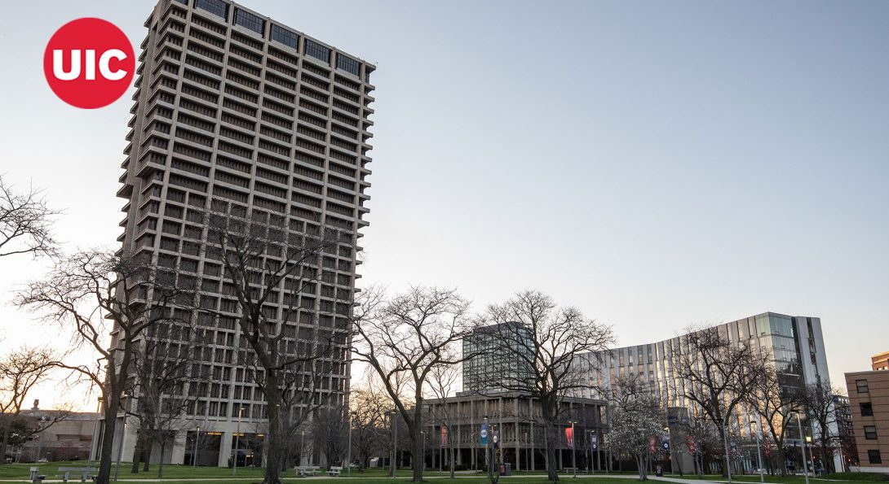
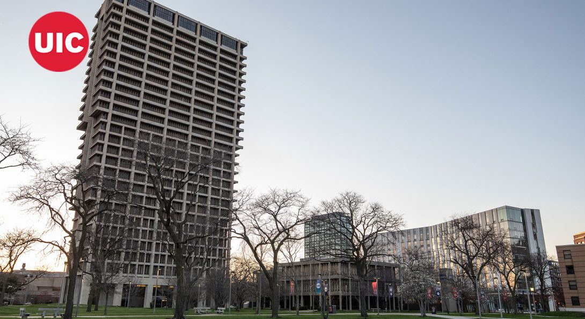

Welcome to Final Project - Group 3
Main Menu
Management Information Systems
Major in Management Information systems are equipped to address issues at the nexus of business and technology. So far we were taught to look at how to leverage various technology-based processes to make businesses and organizations run more efficiently and provide better services to their clients, employees, and bottom line.
 
